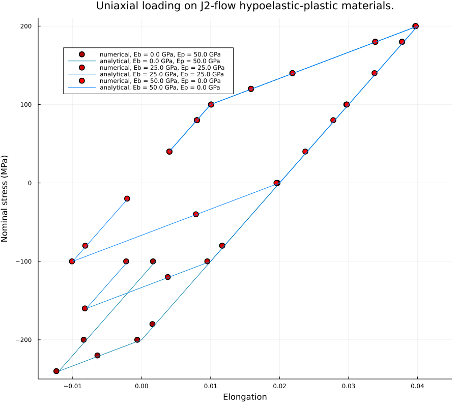

J2 hypo-elastic-plasticity with mixed hardening

Plasticity involves nonlinear implicit constraints, which can't be derived by MetaFEM but we provide the interface to the native Julia. The uniaxial loading case on the same beam geometry is as follows. The source is here.
Geometry
using MetaFEM
initialize_Definitions!()
fem_domain = FEM_Domain(dim = 3)
L_box, e_number, LW_ratio = 1., 4, 10
domain_size = (L_box * LW_ratio, L_box, L_box)
element_number = (Int(e_number * LW_ratio / 4), e_number, e_number)
element_shape = :CUBE
vert, connections = make_Brick(domain_size, element_number, element_shape)
@time ref_mesh = construct_TotalMesh(vert, connections)
@Takeout (vertices, faces) FROM ref_mesh
facet_IDs = get_BoundaryMesh(ref_mesh)
vIDs = faces.vertex_IDs[:, facet_IDs]
x1_mean = vec(sum(vertices.x1[vIDs], dims = 1)) ./ size(faces.vertex_IDs, 1)
x2_mean = vec(sum(vertices.x2[vIDs], dims = 1)) ./ size(faces.vertex_IDs, 1)
x3_mean = vec(sum(vertices.x3[vIDs], dims = 1)) ./ size(faces.vertex_IDs, 1)
err_scale = L_box / e_number * 0.01
facet_IDs_left = facet_IDs[(x1_mean .< err_scale) .& (x1_mean .> (.- err_scale))]
facet_IDs_right = facet_IDs[(x1_mean .< (L_box * LW_ratio .+ err_scale)) .& (x1_mean .> (L_box * LW_ratio .- err_scale))]
facet_IDs_front = facet_IDs[(x2_mean .< err_scale) .& (x2_mean .> (.- err_scale))]
facet_IDs_back = facet_IDs[(x2_mean .< (L_box .+ err_scale)) .& (x2_mean .> (L_box .- err_scale))]
facet_IDs_bottom = facet_IDs[(x3_mean .< err_scale) .& (x3_mean .> (.- err_scale))]
facet_IDs_top = facet_IDs[(x3_mean .< (L_box .+ err_scale)) .& (x3_mean .> (L_box .- err_scale))]
wp_ID = add_WorkPiece!(ref_mesh; fem_domain = fem_domain)
left_bg_ID = add_Boundary!(wp_ID, facet_IDs_left; fem_domain = fem_domain) #left fixed
right_bg_ID = add_Boundary!(wp_ID, facet_IDs_right; fem_domain = fem_domain) #top will be loadedPhysics
Note we defines the plastic strain ep as the INTEGRATION_POINT_VAR, and provide the external interface explicitly as: ep{i,j} = strain_updater(e{1,1}, e{1,2}, e{1,3}, e{2,2}, e{2,3}, e{3,3}), where the LHS specifies ep is a second order tensor and the RHS specifies how we calculate it. The rest script should be intuitive without any trick.
Δx = L_box / e_number
ρ = 1e3
c = 2
Ey = 100e3
ν = 0.0
λ = Ey * ν / ((1 + ν) * (1 - 2 * ν))
μ = Ey / (2 * (1 + ν))
τᵇ = 1000 * Ey / L_box ^ 2
@Sym d
@External_Sym (dʷ, CONTROLPOINT_VAR) (σˡ, CONTROLPOINT_VAR, SYMMETRIC_TENSOR) (ep, INTEGRATION_POINT_VAR, SYMMETRIC_TENSOR)
@Def begin
e{i,j} = (d{i;j} + d{j;i}) / 2
ep{i,j} = strain_updater(e{1,1}, e{1,2}, e{1,3}, e{2,2}, e{2,3}, e{3,3})
e_eval{i,j} = e{i,j} - ep{i,j}
σ{i,j} = 2 * μ * e_eval{i,j} + λ * e_eval{m,m} * δ{i,j}
WF_domain = Bilinear(d{i;j}, σ{i,j}) + Bilinear(d{i}, ρ * (c * d{i;t} + d{i;t,t}))
WF_fixed_bdy = τᵇ * Bilinear(d{i}, (d{i} - dʷ{i}))
WF_right_bdy = Bilinear(d{i}, - σˡ{i,j} * n{j})
end
@time begin
assign_WorkPiece_WeakForm!(wp_ID, WF_domain; fem_domain = fem_domain)
assign_Boundary_WeakForm!(wp_ID, left_bg_ID, WF_fixed_bdy; fem_domain = fem_domain)
assign_Boundary_WeakForm!(wp_ID, right_bg_ID, WF_right_bdy; fem_domain = fem_domain)
end
initialize_LocalAssembly!(fem_domain)Assembly
@time mesh_Classical([wp_ID]; shape = element_shape, itp_type = :Serendipity, itp_order = 2, itg_order = 5, fem_domain = fem_domain)
@time begin
update_Mesh(fem_domain.dim, fem_domain.workpieces[1], fem_domain.workpieces[1].element_space)
assemble_Global_Variables!(; fem_domain = fem_domain)
endDefine External Strain Updater
mutable struct MaterialState{ArrayType}
ep_eval::Vector{ArrayType}
b_eval::Vector{ArrayType}
Y_eval::ArrayType
ep::Vector{ArrayType}
b::Vector{ArrayType} #db = \alpha dσ
Y::ArrayType
λ::FEM_Float
μ::FEM_Float
Eb::FEM_Float
Ep::FEM_Float
f_res::FEM_Float
function MaterialState{ArrayType}(sz::Tuple, Y_initial, params...) where ArrayType
ep_eval = [FEM_zeros(ArrayType, FEM_Float, sz...) for i = 1:6]
b_eval = [FEM_zeros(ArrayType, FEM_Float, sz...) for i = 1:6]
Y_eval = FEM_zeros(ArrayType, FEM_Float, sz...)
ep = [FEM_zeros(ArrayType, FEM_Float, sz...) for i = 1:6]
b = [FEM_zeros(ArrayType, FEM_Float, sz...) for i = 1:6]
Y = FEM_zeros(ArrayType, FEM_Float, sz...)
Y .= Y_initial
return new{ArrayType}(ep_eval, b_eval, Y_eval, ep, b, Y, params...)
end
function MaterialState(wp::WorkPiece{ArrayType}, args...) where ArrayType
integration_number = size(wp.mesh.elements.integral_vals, 1)
element_number = sum(wp.mesh.elements.is_occupied)
return MaterialState{ArrayType}((integration_number, element_number), args...)
end
end
function (state::MaterialState)(e1_1, e1_2, e1_3, e2_2, e2_3, e3_3)
e_test_tensor = assemble_strain(e1_1, e1_2, e1_3, e2_2, e2_3, e3_3)
iterate_stress!(state, e_test_tensor)
return state.ep_eval
end
voigt_ID(i,j) = Voigt_ID(i,j,3)
function assemble_strain(e1_1, e1_2, e1_3, e2_2, e2_3, e3_3)
e_test_tensor = Vector{Any}(undef, 6)
e_test_tensor[voigt_ID(1, 1)] = e1_1
e_test_tensor[voigt_ID(2, 2)] = e2_2
e_test_tensor[voigt_ID(3, 3)] = e3_3
e_test_tensor[voigt_ID(1, 2)] = e1_2
e_test_tensor[voigt_ID(1, 3)] = e1_3
e_test_tensor[voigt_ID(2, 3)] = e2_3
return e_test_tensor
end
function estimate_stress(state::MaterialState, e_tensor)
@Takeout (λ, μ) FROM state
sigma_tensor = Vector{Any}(undef, 6)
for i = 1:3, j = i:3
sigma_tensor[voigt_ID(i, j)] = (2 * μ) .* e_tensor[voigt_ID(i, j)]
end
for i = 1:3
sigma_tensor[voigt_ID(i, i)] .+= λ .* (e_tensor[voigt_ID(1, 1)] .+ e_tensor[voigt_ID(2, 2)] .+ e_tensor[voigt_ID(3, 3)])
end
return sigma_tensor
end
function iterate_stress!(state::MaterialState{ArrayType}, e_test_tensor) where ArrayType
@Takeout (ep_eval, b_eval, Y_eval, ep, b, Y, λ, μ, Eb, Ep, f_res) FROM state
e_eval_tensor = Vector{Any}(undef, 6)
for i = 1:6
ep_eval[i] .= ep[i]
e_eval_tensor[i] = e_test_tensor[i] .- ep_eval[i]
b_eval[i] .= b[i]
end
Y_eval .= Y
λp = FEM_buffer(ArrayType, FEM_Float, size(Y)...)
sigma_tensor = estimate_stress(state, e_eval_tensor)
s_dev_2 = FEM_buffer(ArrayType, FEM_Float, size(Y)...)
skk_div3 = FEM_buffer(ArrayType, FEM_Float, size(Y)...)
s_dev_mag = FEM_buffer(ArrayType, FEM_Float, size(Y)...)
s_dev_tensor = Vector{Any}(undef, 6)
n_dev_tensor = Vector{Any}(undef, 6)
for i = 1:6
s_dev_tensor[i] = sigma_tensor[i] .- b_eval[i]
end
skk_div3 = (s_dev_tensor[voigt_ID(1, 1)] .+ s_dev_tensor[voigt_ID(2, 2)] .+ s_dev_tensor[voigt_ID(3, 3)]) ./ 3
for i = 1:3
s_dev_tensor[voigt_ID(i, i)] .-= skk_div3 #now s becomes dev(s)
end
for i = 1:3, j = 1:3
s_dev_2 .+= s_dev_tensor[voigt_ID(i, j)] .* s_dev_tensor[voigt_ID(i, j)]
end
s_dev_mag .= sqrt.(s_dev_2)
for i = 1:6
n_dev_tensor[i] = s_dev_tensor[i] ./ s_dev_mag
end
f = sqrt(3 / 2) .* s_dev_mag .- Y_eval #yield criteria!
yielded_IDs = findall(f .> f_res)
if ~isempty(yielded_IDs)
λp[yielded_IDs] .= sqrt(3 / 2) .* f[yielded_IDs] ./ (3 * μ + Eb + Ep)
println("yielded")
for i = 1:6
ep_eval[i][yielded_IDs] .= ep[i][yielded_IDs] .+ n_dev_tensor[i][yielded_IDs] .* λp[yielded_IDs]
b_eval[i][yielded_IDs] .= b[i][yielded_IDs] .+ (2 / 3 * Eb) .* n_dev_tensor[i][yielded_IDs] .* λp[yielded_IDs]
end
Y_eval[yielded_IDs] .= Y[yielded_IDs] .+ (sqrt(2/3) * Ep) .* λp[yielded_IDs]
end
return nothing
end
function update_States!(state::MaterialState)
for i = 1:6
state.ep[i] .= state.ep_eval[i]
state.b[i] .= state.b_eval[i]
end
state.Y .= state.Y_eval
return nothing
end
Y_initial = 100
f_res = 1
Eb = 0
Ep = Ey / 2
strain_updater = MaterialState(fem_domain.workpieces[1], Y_initial, λ, μ, Eb, Ep, f_res)
compile_Updater_GPU(; domain_ID = 1, fem_domain = fem_domain)Run & Gather Data
fem_domain.linear_solver = x -> iterative_Solve!(x; Sv_func! = bicgstabl_GS!, maxiter = 2000, max_pass = 20, s = 8)
fem_domain.globalfield.converge_tol = 1e-3
d1_data = Vector[]
s_test_groups = [[40, 80, 100, 120, 140, 180, 200, 180, 100, 0, -80, -180, -200, -220, -240, -200, -100],
[40, 80, 100, 120, 140, 180, 200, 180, 100, 0, -80, -100, -120, -160, -100],
[40, 80, 100, 120, 140, 180, 200, 180, 140, 100, 80, 40, 0, -40, -100, -80, -20]]
d1_analytical = [[4, 8, 10, 16, 22, 34, 40, 38, 30, 20, 12, 2, 0, -6, -12, -8, 2] .* 1e-3,
[4, 8, 10, 16, 22, 34, 40, 38, 30, 20, 12, 10, 4, -8, -2].* 1e-3,
[4, 8, 10, 16, 22, 34, 40, 38, 34, 30, 28, 24, 20, 8, -10, -8, -2].* 1e-3]
Eb_groups = [0, Ey / 4, Ey / 2]
Ep_groups = [Ey / 2, Ey / 4, 0]
dx = L_box/e_number
err_scale = 0.25
cpts = fem_domain.workpieces[1].mesh.controlpoints
eles = fem_domain.workpieces[1].mesh.elements
right_cp_IDs = findall((cpts.x1 .> (L_box * LW_ratio) - err_scale * dx) .& (cpts.x1 .< (L_box * LW_ratio) + err_scale * dx))
left_cp_IDs = findall((cpts.x1 .> - err_scale * dx) .& (cpts.x1 .< err_scale * dx))
dt = fem_domain.globalfield.dt = 1e0 # viscousity
for (s_tests, Eb, Ep) in zip(s_test_groups, Eb_groups, Ep_groups)
d1s = FEM_Float[]
cpts.d1 .= 0
cpts.d2 .= 0
cpts.d3 .= 0
cpts.d1_t .= 0
cpts.d2_t .= 0
cpts.d3_t .= 0
cpts.d1_tt .= 0
cpts.d2_tt .= 0
cpts.d3_tt .= 0
assemble_X!(fem_domain.workpieces, fem_domain.globalfield)
for i = 1:6
strain_updater.ep[i] .= 0
strain_updater.b[i] .= 0
end
strain_updater.Y .= Y_initial
strain_updater.Eb = Eb
strain_updater.Ep = Ep
for s in s_tests
cpts.σˡ1 .= s
counter = 0
while true
counter += 1
update_OneStep!(fem_domain.time_discretization; fem_domain = fem_domain, max_iter = 3)
dessemble_X!(fem_domain.workpieces, fem_domain.globalfield)
println("-------------------------$counter-----------------")
update_States!(strain_updater)
umax = maximum(abs.(cpts.d1_t))
println("umax = $umax")
if (umax < 1e-4)
println(counter)
push!(d1s, sum(cpts.d1[right_cp_IDs]) / prod(size(right_cp_IDs)))
break
end
end
end
push!(d1_data, d1s)
endPlot
using Plots
fig = plot(; size = (900,800), title = "Uniaxial loading on J2-flow hypoelastic-plastic materials." , xlims = (-0.015, 0.045), xticks = -0.01:0.01:0.04, ylims = (-250, 210), xlabel = "Elongation", ylabel = "Nominal stress (MPa)")
case_num = length(s_test_groups)
for (i, (s_tests, d1_ana, d1s, Eb, Ep)) in enumerate(zip(s_test_groups, d1_analytical, d1_data, Eb_groups, Ep_groups))
color_val = (i / case_num + 1) / 2
scatter!(fig, d1s, s_tests, markershape = :circle, markersize = 6, color = RGBA(color_val, 0, 0, 1), label = "numerical, Eb = $(Eb / 1e3) GPa, Ep = $(Ep / 1e3) GPa")
plot!(fig, d1_ana, s_tests, color = RGBA(0, 0.5, color_val, 1), label = "analytical, Eb = $(Eb / 1e3) GPa, Ep = $(Ep / 1e3) GPa")
end
fig.subplots[1].attr[:legend_position] = (0.15, 0.9)
figThis page was generated using Literate.jl.